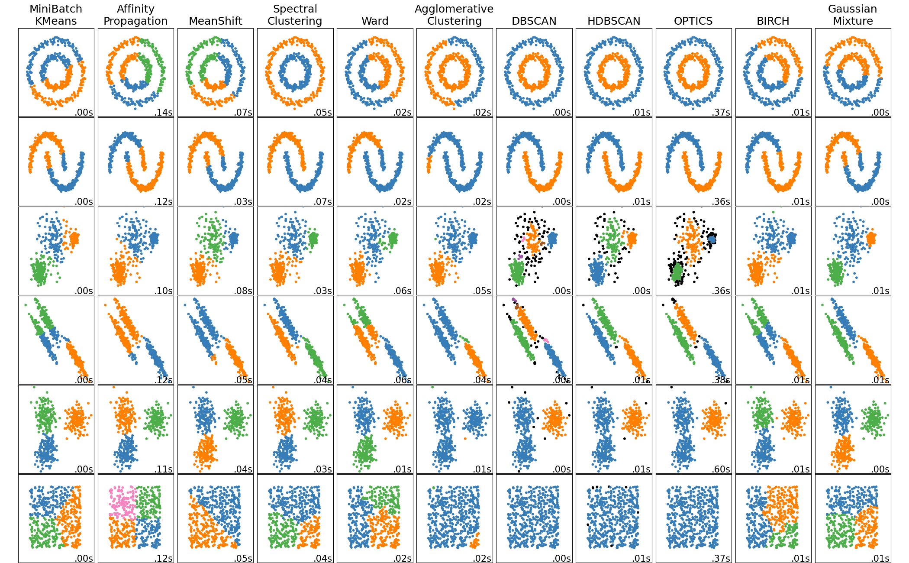
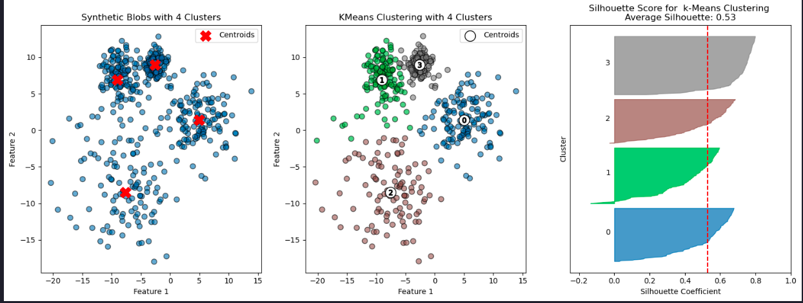
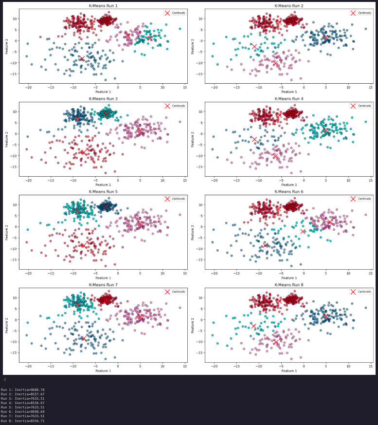
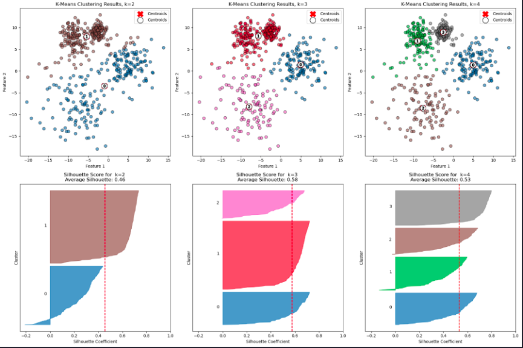
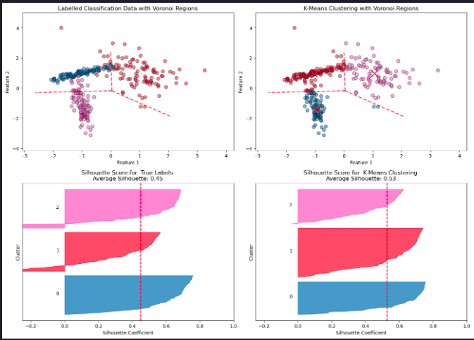

Evaluating KMeans-Clustering

Evaluating k-means Clustering
Objectives
- Implement and evaluate the performance of k-means clustering on synthetic data
- Interpret various evaluation metrics and visualizations
- Compare clustering results against known classes using synthetic data
Introduction
This article demonstrates how to generate synthetic data, run k-means clustering, and evaluate the results using various metrics and visualizations.
Import the required libraries
import numpy as np
import matplotlib.pyplot as plt
from sklearn.cluster import KMeans
from sklearn.datasets import make_blobs, make_classification
from sklearn.metrics import silhouette_score, silhouette_samples, davies_bouldin_score
from scipy.spatial import Voronoi, voronoi_plot_2d
from matplotlib import cmCreate synthetic data and run k-means
X, y = make_blobs(n_samples=500, n_features=2, centers=4, cluster_std=[1.0, 3, 5, 2], random_state=42)
n_clusters = 4
kmeans = KMeans(n_clusters=n_clusters, random_state=42)
y_kmeans = kmeans.fit_predict(X)Evaluate clustering
We’ll define a function for evaluating the clustering models we’ll be building. We’ll include silhouette scores and the Davies-Bouldin index, plus generate a plot displaying the silhouette scores
def evaluate_clustering(X, labels, n_clusters, ax=None, title_suffix=''):
"""
Evaluate a clustering model using silhouette scores and the Davies-Bouldin index.
Parameters:
X (ndarray): Feature matrix.
labels (array-like): Cluster labels assigned to each sample.
n_clusters (int): The number of clusters in the model.
ax: The subplot axes to plot on.
title_suffix (str): Optional suffix for plot titlec
Returns:
None: Displays silhoutte scores and a silhouette plot.
"""
if ax is None:
ax = plt.gca() # Get the current axis if none is provided
# Calculate silhouette scores
silhouette_avg = silhouette_score(X, labels)
sample_silhouette_values = silhouette_samples(X, labels)
# Plot silhouette analysis on the provided axis
unique_labels = np.unique(labels)
colormap = cm.tab10
color_dict = {label: colormap(float(label) / n_clusters) for label in unique_labels}
y_lower = 10
for i in unique_labels:
ith_cluster_silhouette_values = sample_silhouette_values[labels == i]
ith_cluster_silhouette_values.sort()
size_cluster_i = ith_cluster_silhouette_values.shape[0]
y_upper = y_lower + size_cluster_i
color = color_dict[i]
ax.fill_betweenx(np.arange(y_lower, y_upper),
0, ith_cluster_silhouette_values,
facecolor=color, edgecolor=color, alpha=0.7)
ax.text(-0.05, y_lower + 0.5 * size_cluster_i, str(i))
y_lower = y_upper + 10
ax.set_title(f'Silhouette Score for {title_suffix} \n' +
f'Average Silhouette: {silhouette_avg:.2f}')
ax.set_xlabel('Silhouette Coefficient')
ax.set_ylabel('Cluster')
ax.axvline(x=silhouette_avg, color="red", linestyle="--")
ax.set_xlim([-0.25, 1]) # Set the x-axis range to [0, 1]
ax.set_yticks([])Here we’ll make some synthetic data consisting of slightly overlapping blobs, then run and evaluate k-means with k=4 clusters.
# Run KMeans multiple times with different random states and plot inertia
# Plot metrics for different k values
X, y = make_blobs(n_samples=500, n_features=2, centers=4, cluster_std=[1.0, 3, 5, 2], random_state=42)
# Apply KMeans clustering
n_clusters = 4
kmeans = KMeans(n_clusters=n_clusters, random_state=42)
y_kmeans = kmeans.fit_predict(X)
colormap = cm.tab10
# Plot the blobs
plt.figure(figsize=(18, 6))
plt.subplot(1, 3, 1)
plt.scatter(X[:, 0], X[:, 1], s=50, alpha=0.6, edgecolor='k')
centers = kmeans.cluster_centers_
plt.scatter(centers[:, 0], centers[:, 1], c='red', s=200, marker='X', alpha=0.9, label='Centroids')
plt.title(f'Synthetic Blobs with {n_clusters} Clusters')
plt.xlabel('Feature 1')
plt.ylabel('Feature 2')
plt.legend()
# Plot the clustering result
# Create colors based on the predicted labels
colors = colormap(y_kmeans.astype(float) / n_clusters)
plt.subplot(1, 3, 2)
plt.scatter(X[:, 0], X[:, 1], c=colors, s=50, alpha=0.6, edgecolor='k')
# Label the clusters
centers = kmeans.cluster_centers_
# Draw white circles at cluster centers
plt.scatter(
centers[:, 0],
centers[:, 1],
marker="o",
c="white",
alpha=1,
s=200,
edgecolor="k",
label='Centroids'
)
# Label the custer number
for i, c in enumerate(centers):
plt.scatter(c[0], c[1], marker="$%d$" % i, alpha=1, s=50, edgecolor="k")
plt.title(f'KMeans Clustering with {n_clusters} Clusters')
plt.xlabel('Feature 1')
plt.ylabel('Feature 2')
plt.legend()
# Evaluate the clustering
plt.subplot(1, 3, 3)
evaluate_clustering(X, y_kmeans, n_clusters, title_suffix=' k-Means Clustering')
plt.show()
Cluster stability and number of clusters
# Number of runs for k-means with different random states
n_runs = 8
inertia_values = []
# Calculate number of rows and columns needed for subplots
n_cols = 2 # Number of columns
n_rows = -(-n_runs // n_cols) # Ceil division to determine rows
plt.figure(figsize=(16, 16)) # Adjust the figure size for better visualization
# Run K-Means multiple times with different random states
for i in range(n_runs):
kmeans = KMeans(n_clusters=4, random_state=None) # Use the default `n_init`
kmeans.fit(X)
inertia_values.append(kmeans.inertia_)
# Plot the clustering result
plt.subplot(n_rows, n_cols, i + 1)
plt.scatter(X[:, 0], X[:, 1], c=kmeans.labels_, cmap='tab10', alpha=0.6, edgecolor='k')
plt.scatter(kmeans.cluster_centers_[:, 0], kmeans.cluster_centers_[:, 1], c='red', s=200, marker='x', label='Centroids')
plt.title(f'K-Means Run {i + 1}')
plt.xlabel('Feature 1')
plt.ylabel('Feature 2')
plt.legend(loc='upper right', fontsize='small')
plt.tight_layout()
plt.show()
# Print inertia values
for i, inertia in enumerate(inertia_values, start=1):
print(f'Run {i}: Inertia={inertia:.2f}')
Number of clusters
How do performance metrics change as the number of clusters increases?
Can this analysis guide you in determining the optimal number of clusters?
To explore this, we can examine how varying the value of K affects key metrics such as inertia, the Davies-Bouldin index, and silhouette scores. By plotting these scores as a function of K, we can analyze the results and potentially gain insights into the optimal number of clusters for our data.
# Range of k values to test
k_values = range(2, 11)
# Store performance metrics
inertia_values = []
silhouette_scores = []
davies_bouldin_indices = []
for k in k_values:
kmeans = KMeans(n_clusters=k, random_state=42)
y_kmeans = kmeans.fit_predict(X)
# Calculate and store metrics
inertia_values.append(kmeans.inertia_)
silhouette_scores.append(silhouette_score(X, y_kmeans))
davies_bouldin_indices.append(davies_bouldin_score(X, y_kmeans))
# Plot the inertia values (Elbow Method)
plt.figure(figsize=(18, 6))
plt.subplot(1, 3, 1)
plt.plot(k_values, inertia_values, marker='o')
plt.title('Elbow Method: Inertia vs. k')
plt.xlabel('Number of Clusters (k)')
plt.ylabel('Inertia')
# Plot silhouette scores
plt.subplot(1, 3, 2)
plt.plot(k_values, silhouette_scores, marker='o')
plt.title('Silhouette Score vs. k')
plt.xlabel('Number of Clusters (k)')
plt.ylabel('Silhouette Score')
# Plot Davies-Bouldin Index
plt.subplot(1, 3, 3)
plt.plot(k_values, davies_bouldin_indices, marker='o')
plt.title('Davies-Bouldin Index vs. k')
plt.xlabel('Number of Clusters (k)')
plt.ylabel('Davies-Bouldin Index')
plt.tight_layout()
plt.show()Cluster visualization
Let’s plot the blobs and the clustering results for k = 3, 4, and 5
# Enter your code here
plt.figure(figsize=(18, 12))
colormap = cm.tab10
for i, k in enumerate([2, 3, 4]):
# Fit KMeans and predict the labels
kmeans = KMeans(n_clusters=k, random_state=42)
y_kmeans = kmeans.fit_predict(X)
# Create colors based on the predicted labels
colors = colormap(y_kmeans.astype(float) / k)
# Scatter plot for each k in the first row (1, 2, 3)
ax1 = plt.subplot(2, 3, i + 1)
ax1.scatter(X[:, 0], X[:, 1], c=colors, s=50, alpha=0.6, edgecolor='k')
ax1.scatter(kmeans.cluster_centers_[:, 0], kmeans.cluster_centers_[:, 1], c='red', s=200, marker='X', label='Centroids')
# Labeling the clusters
centers = kmeans.cluster_centers_
# Draw white circles at cluster centers
plt.scatter(
centers[:, 0],
centers[:, 1],
marker="o",
c="white",
alpha=1,
s=200,
edgecolor="k",
label='Centroids',
)
for i_, c in enumerate(centers):
plt.scatter(c[0], c[1], marker="$%d$" % i_, alpha=1, s=50, edgecolor="k")
ax1.set_title(f'K-Means Clustering Results, k={k}')
ax1.set_xlabel('Feature 1')
ax1.set_ylabel('Feature 2')
ax1.legend()
# Silhouette plot for each k in the second row (4, 5, 6)
ax2 = plt.subplot(2, 3, i + 4)
evaluate_clustering(X, y_kmeans, k, ax=ax2, title_suffix=f' k={k}')
plt.tight_layout() # Adjust spacing between plots
plt.show()
### Limitations of k-means - Shape sensitivity
Can you identify situations where K-means would not be appropriate? What alternatives could be used?
Let’s explore these questions with an experiment. Using make_classification we’ll create a labelled, 2-d dataset cosisting of three classes. This time we’ll have differently shaped sets of points in each class, not just spherical blobs.
# Generate synthetic classification data
X, y_true = make_classification(n_samples=300, n_features=2, n_informative=2, n_redundant=0,
n_clusters_per_class=1, n_classes=3, random_state=42)
# Apply K-Means clustering
kmeans = KMeans(n_clusters=3, random_state=42)
y_kmeans = kmeans.fit_predict(X)
centroids = kmeans.cluster_centers_
# Compute the Voronoi diagram
vor = Voronoi(centroids)
# Create a 2x2 grid of subplots
fig, axes = plt.subplots(2, 2, figsize=(14, 10))
# Get consistent axis limits for all scatter plots
x_min, x_max = X[:, 0].min() - 1, X[:, 0].max() + 1
y_min, y_max = X[:, 1].min() - 1, X[:, 1].max() + 1
# Plot the true labels with Voronoi regions
colormap = cm.tab10
colors_true = colormap(y_true.astype(float) / 3)
axes[0, 0].scatter(X[:, 0], X[:, 1], c=colors_true, s=50, alpha=0.5, ec='k')
voronoi_plot_2d(vor, ax=axes[0, 0], show_vertices=False, line_colors='red', line_width=2, line_alpha=0.6, point_size=2)
axes[0, 0].set_title('Labelled Classification Data with Voronoi Regions')
axes[0, 0].set_xlabel('Feature 1')
axes[0, 0].set_ylabel('Feature 2')
axes[0, 0].set_xlim(x_min, x_max)
axes[0, 0].set_ylim(y_min, y_max)
# Call evaluate_clustering for true labels
evaluate_clustering(X, y_true, n_clusters=3, ax=axes[1, 0], title_suffix=' True Labels')
# Plot K-Means clustering results with Voronoi regions
colors_kmeans = colormap(y_kmeans.astype(float) / 3)
axes[0, 1].scatter(X[:, 0], X[:, 1], c=colors_kmeans, s=50, alpha=0.5, ec='k')
axes[0, 1].scatter(centroids[:, 0], centroids[:, 1], c='red', s=200, marker='x', label='Centroids')
voronoi_plot_2d(vor, ax=axes[0, 1], show_vertices=False, line_colors='red', line_width=2, line_alpha=0.6, point_size=2)
axes[0, 1].set_title('K-Means Clustering with Voronoi Regions')
axes[0, 1].set_xlabel('Feature 1')
axes[0, 1].set_ylabel('Feature 2')
axes[0, 1].set_xlim(x_min, x_max)
axes[0, 1].set_ylim(y_min, y_max)
# Call evaluate_clustering for K-Means labels
evaluate_clustering(X, y_kmeans, n_clusters=3, ax=axes[1, 1], title_suffix=' K-Means Clustering')
# Adjust layout and show plot
plt.tight_layout()
plt.show()
K-Means is a widely used clustering algorithm, but it has several important limitations:
- Assumption of Spherical Clusters
K-Means assumes clusters are isotropic (round and equally sized). This assumption fails when the true clusters are elongated, have irregular shapes, or vary in density.
- Sensitivity to Cluster Centers
K-Means partitions space based solely on the distance to centroids, as visualized by the Voronoi diagram. This can lead to poor boundary alignment if the underlying structure of the data is not centroid-based.
- 3. Mismatch with True Labels
A higher silhouette score for K-Means does not necessarily mean the clustering reflects the “real” class structure. K-Means optimizes intra-cluster compactness, not correspondence to ground truth labels.
- 4. Difficulty with Overlapping Clusters
When clusters overlap or are not well-separated, K-Means can arbitrarily split or merge them, resulting in unreliable assignments.
- 5. Number of Clusters Must Be Pre-Specified
K-Means requires the number of clusters, ( k ), to be specified in advance. Choosing the correct value for ( k ) can be challenging and subjective.
- 6. Sensitivity to Initialization
Different centroid seeds can yield different clustering results. While K-Means++ initialization helps reduce this sensitivity, it does not
Summary
This article showed how to implement and evaluate k-means clustering, including cluster stability, metrics, and limitations of the algorithm.